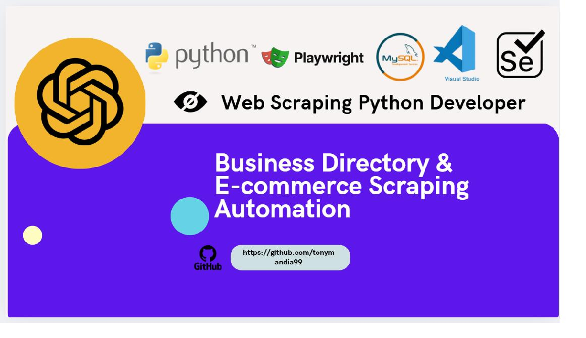
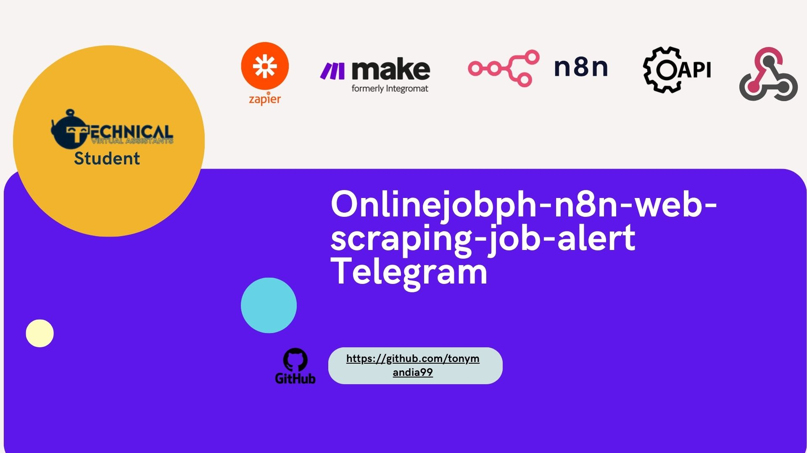
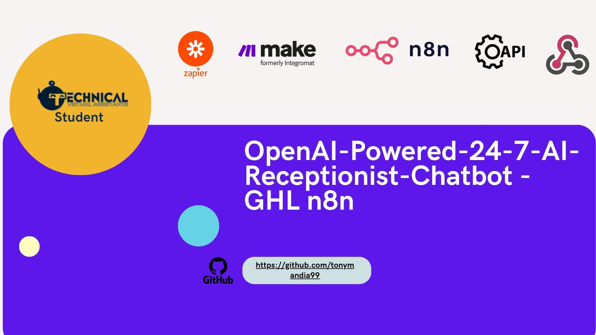
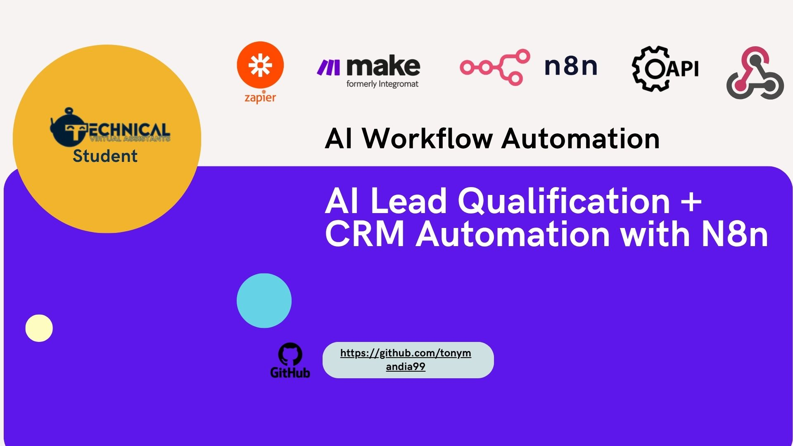
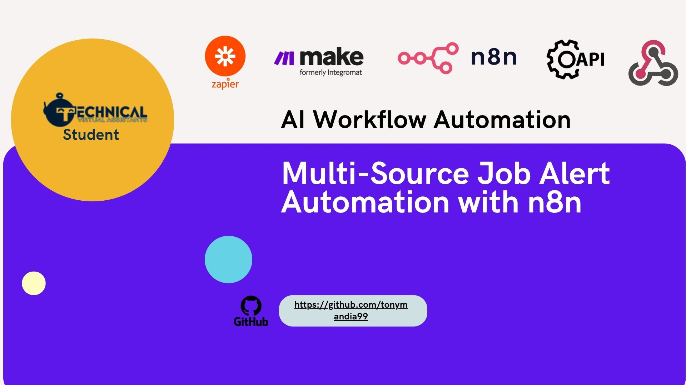
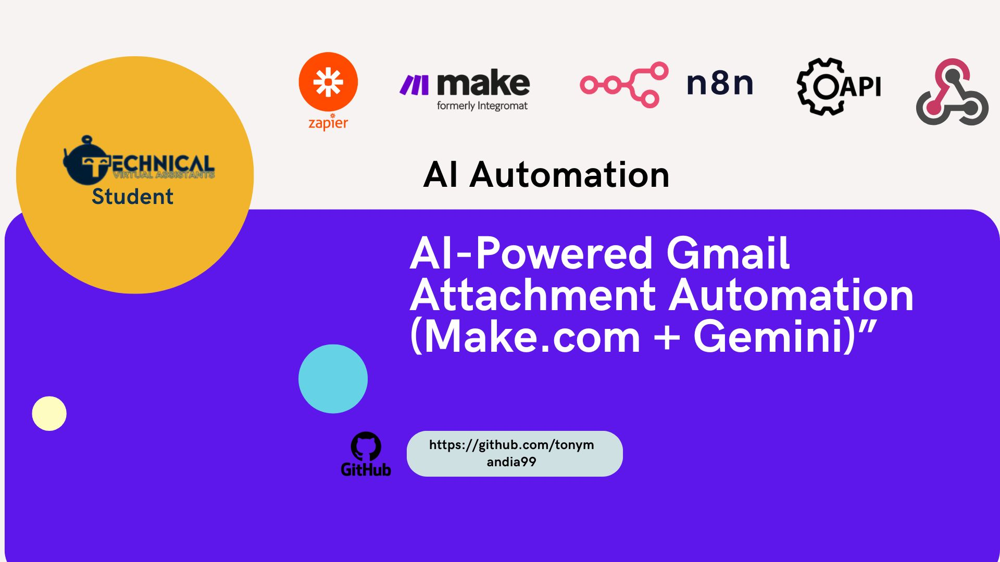
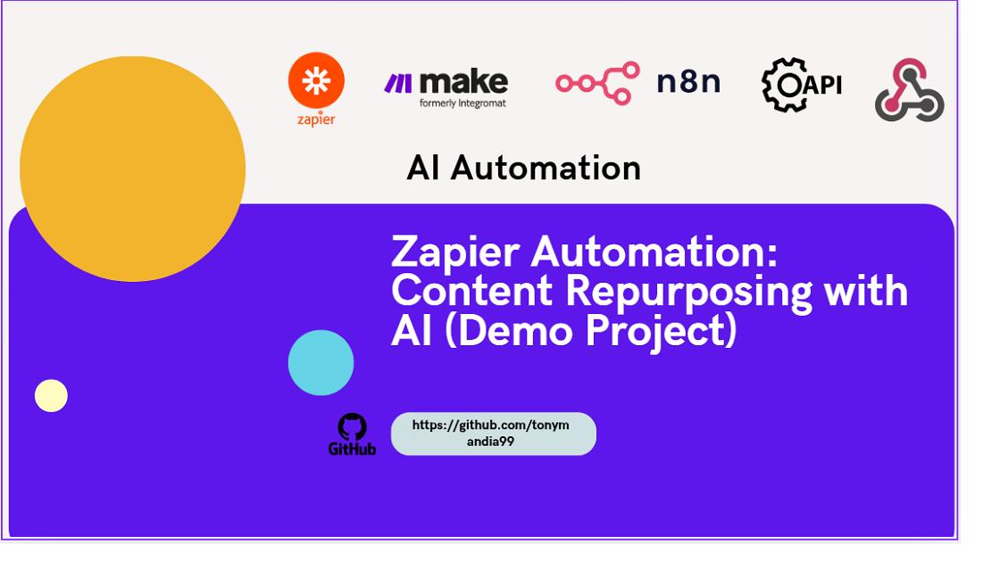

✦
Web Scraping
Extract permitted public business listings, directory records, and website information using Python-based scraping tools.
I build Python web scrapers and data-processing workflows that collect publicly available business information, clean messy records, remove duplicates, and deliver structured Excel or CSV datasets.
WHAT I DO
Extract permitted public business listings, directory records, and website information using Python-based scraping tools.
Custom scripts for pagination, data extraction, retries, validation, and structured Excel/CSV outputs.
Insurance-related and construction-contractor research experience, with careful source checking and record organization.
Clean, validate, deduplicate, transform, and organize data in Excel and CSV formats.
Troubleshoot existing scripts and automate repetitive reporting or data-processing steps.
FEATURED PROJECTS
Explore my web scraping and data-processing projects, alongside supporting automation work.
A collection of Python scrapers for public business directories, supporting insurance lead research with pagination, duplicate removal, and structured CSV/Excel exports.
View Project →
Python + SeleniumCollects product names, prices, size options, and quantity discounts across multiple pages, then exports structured product data to Excel.
View Project →
n8n + TelegramSearches live job posts, extracts job details, evaluates matching roles, removes duplicates, and sends structured alerts through Telegram.
View Project →
n8n + OpenAIAnswers customer questions, manages appointment bookings, saves customer information, updates the CRM, and requests human assistance when needed.
View Project →
n8nLead intake, AI qualification, conditional routing, CRM actions, notifications, and reporting.
View Project →
n8nParses job alerts, normalizes fields, filters matches, removes duplicates, and saves structured results.
View Project →
Make.comAI-generated filenames, cloud file storage, and processing logs for cleaner document management.
View Project →
ZapierTurns media into transcripts and reusable content using AI, conditional logic, and automated logging.
View Project →CORE SKILLS
Extract public website and directory data with pagination, retry handling, validation, and structured exports.
Business research, duplicate detection, column normalization, formatting, and Excel/CSV delivery.
Maintain scripts, process large datasets, use APIs when appropriate, and support repeatable data pipelines.
EXPERIENCE
ClickPlay Solutions Corp
Analyze transactions and user behavior, investigate suspicious patterns, maintain monitoring data, and support accurate operational reporting.
Insurance-related research and CQC construction contractor data
Worked on client data extraction, contractor/business research, data cleaning, and deduplication. Client-confidential files and details are not publicly shared.
TOOLS
LET'S WORK TOGETHER
“I help businesses turn web data into clean, organized datasets for lead research, reporting, and better decisions.”